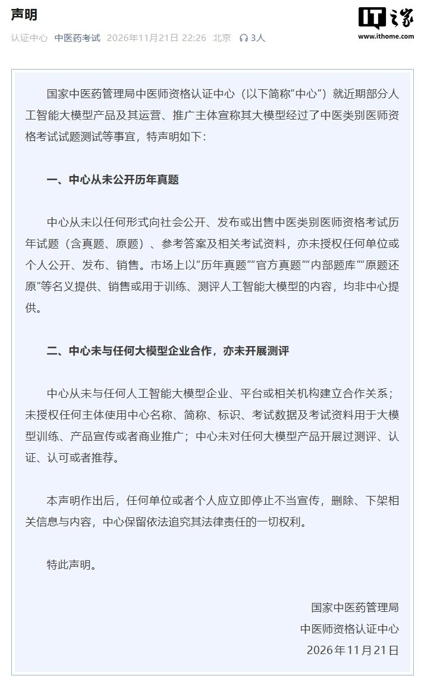

新闻 · 2026-11-22 12:00
试题经过大模型测试？国家中医药管理局认证中心：未与任何大模型企业合作，亦未开展测评
国家中医药管理局中医师资格认证中心声明从未与任何大模型企业合作，亦未开展测评，未公开或授权任何单位使用其考试资料训练或推广大模型，市场所谓‘历年真题’等均非官方提供，中心保留追责权利。

来源与核验
单一信源报道，未交叉核实
国家中医药管理局中医师资格认证中心声明从未与任何大模型企业合作，亦未开展测评，未公开或授权任何单位使用其考试资料训练或推广大模型，市场所谓‘历年真题’等均非官方提供，中心保留追责权利。

单一信源报道，未交叉核实